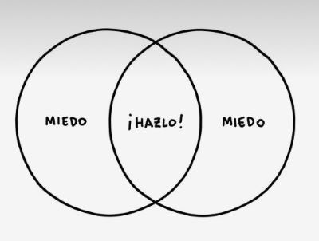
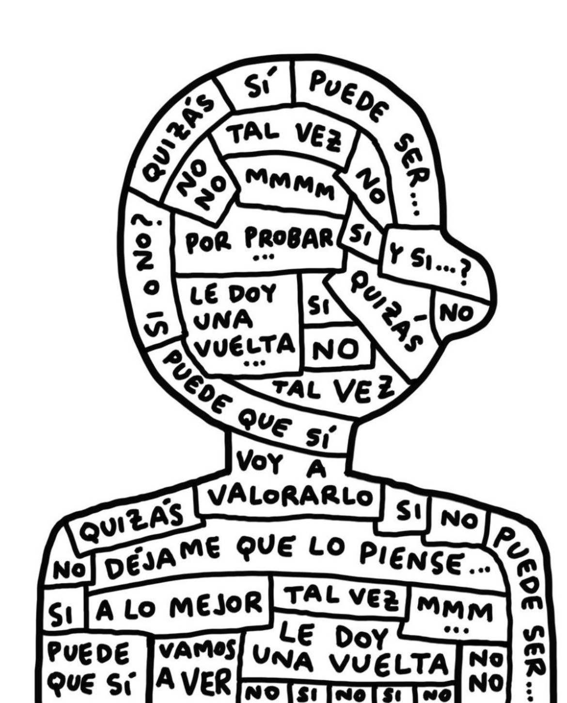

La orientación vocacional es un proceso que te ayuda a descubrir qué carrera o camino profesional/laboral va mejor con tus intereses, habilidades, valores y personalidad. Sirve para conocerte mejor, explorar distintas áreas de estudio o profesiones, y tomar decisiones más informadas sobre qué carrera elegir.
¿Qué es la orientación vocacional?
Vocación y miedos: ¿Qué me frena?
¿Y si elijo mal? Es normal tener miedo a equivocarte, pero ninguna decisión es definitiva. Siempre estás a tiempo de cambiar y crecer.
"No soy suficientemente bueno/a para esta carrera": La inseguridad es parte del proceso. Lo importante es que te guste, estés dispuesto/a a aprender y confíes en vos. El talento se construye con práctica y pasión.
"Esa carrera no tiene salida laboral": Es clave investigar, pero también saber que el mundo laboral cambia. Lo importante es encontrar algo que te apasione.


TIP
Hacete estas preguntas para ayudarte a decidir:
- ¿Qué me gusta hacer en mis tiempos libres?
- ¿Sobre qué temas suelo leer, mirar videos o hablar?
- ¿Qué tipos de actividades me hacen sentir útil o feliz?